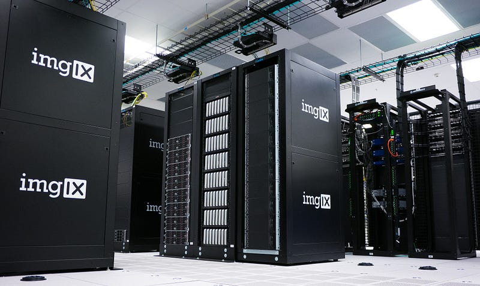
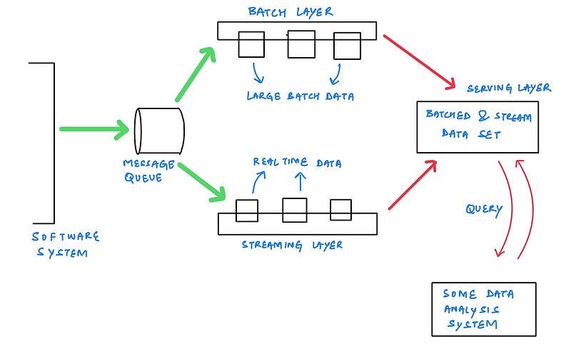
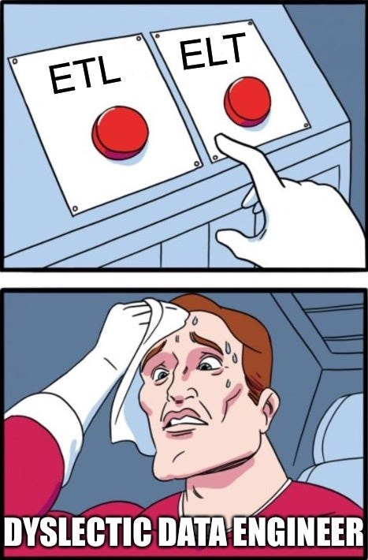

Lambda architecture is a powerful tool in software development that helps organizations build real-time, scalable, and fault-tolerant systems. This approach allows businesses to process and analyze large amounts of data in real-time while providing reliable results. In this article, we will take a closer look at lambda architecture, its components, and how it is used in software development.

What is Lambda Architecture
Lambda architecture is a data processing architecture designed to handle massive quantities of data by taking advantage of both batch and real-time processing methods. It is called lambda architecture because it involves two separate paths, a batch processing path, and a real-time processing path, which converge at a unified layer known as the serving layer.
Lambda architecture is based on the principle that data can be processed multiple times using different algorithms and technologies to extract meaningful insights. This approach allows organizations to scale their data processing needs and handle large amounts of data quickly and efficiently.

Components of Lambda Architecture
Lambda architecture consists of three main components:
- Batch Layer : The batch layer is responsible for processing and storing the entire dataset, regardless of its size, and generating precomputed batch views. This layer is built using technologies like Apache Hadoop and Apache Spark, which can handle distributed batch processing of large datasets.
- Speed Layer : The speed layer is responsible for processing real-time data as it arrives and generating real-time views. This layer is built using technologies like Apache Storm and Apache Flink, which can handle distributed stream processing of data in real-time.
- Serving Layer : The serving layer is responsible for combining the results of the batch layer and the speed layer to provide a unified view of the data. This layer is built using technologies like Apache Cassandra and Apache HBase, which provide real-time access to data.
What is ETL and ELT
Lambda architecture includes two main processing paths: batch processing and real-time processing. ETL (Extract, Transform, Load) and ELT (Extract, Load, Transform) are two methods used to transform data during batch processing.

ETL is a batch processing method used to extract data from various sources, transform the data into the required format, and load it into a data warehouse or a data lake. The transformed data is then used for generating batch views. ETL is ideal for processing large volumes of data and handling complex transformations.
On the other hand, ELT is a batch processing method that extracts data from various sources and loads it into a data warehouse or a data lake in its original format. The data is then transformed into the required format during query time or when generating batch views. ELT is ideal for processing smaller volumes of data and handling simple transformations.
Lambda architecture combines ETL and ELT to handle both batch processing and real-time processing. ETL is used in the batch layer to process large volumes of data, while ELT is used in the serving layer to process small volumes of data in real-time.
Advantages of Lambda Architecture
Lambda architecture provides several benefits, including:
- Scalability: Lambda architecture can scale horizontally, meaning it can handle a large number of nodes processing the data simultaneously.
- Fault-tolerance: Lambda architecture is designed to handle failures in the system, making it resilient to hardware and software failures.
- Real-time processing: Lambda architecture allows organizations to process data in real-time, providing near-instant insights into data.
- Flexibility: Lambda architecture is flexible, allowing organizations to use different technologies to process data and generate insights.
Conclusion
Lambda architecture is an excellent approach for handling large amounts of data in real-time. It is a powerful tool for organizations looking to scale their data processing needs while ensuring fault-tolerance and reliability.
“ Data flowing throught an enterprise software can be either be real time (due to time sensitivity) or batched (due to performance reasons). Lambda architecture helps in processing both in parallel as stream and batch layers respectively which makes it scalable and optimised approach for any large scale enterprise ”
By combining batch and real-time processing, organizations can gain insights into their data quickly and efficiently. Lambda architecture is an essential tool for modern data-driven organizations looking to stay ahead of the competition.